03.A Formatting co-culture growth curves from Logphase 600
Quality control
1 Introduction
The ancestral (streptomycin sensitive) and evolved (streptomycin resistant) forms of HAMBI_1287 and HAMBI_1977 were grown on adjacent 0.22 μm membrane-separated wells in a Verasys co-culture plate. The membrane allows free diffusion of resources and metabolic byproducts but not cells. Note that due to the unique format of the plate rows A and H do not contain any data. The plates differ by streptomycin concentration as indicated below. Measurements were collected with a Biotek Logphase 600 microplate reader.
In this notebook we read the plate reader exports, join them to the samplesheets, smooth them, and inspect every well.
2 Setup
2.1 Libraries
2.2 Global variables
3 Batch01 - 2025.09.20
3.1 Read sample metadata
3.2 Read growth curves
Diffusion test plate01.
Show/hide code
plate01 <- read_logphase_xlsx(
here::here(
batch,
"diffusion_test_2_Co-culture_1977_1287AE_12.9_15-syys-2025 09-00-26.xlsx"
),
sheet = 2,
skip = 1
) %>%
# remove rows A and H
filter(str_detect(well, "^A|^H", negate = TRUE)) %>%
left_join(samplesheet_diff_test, by = join_by(well)) %>%
mutate(plate_name = "plate01")Experiment plate02 - 0 μg/ml streptomycin.
Show/hide code
plate02 <- read_logphase_xlsx(
here::here(batch, "Co-culture_0_4_8ug_plates_22-syys-2025 08-17-10.xlsx"),
sheet = 2,
skip = 1
) %>%
# rows A and H not collected here so they are NA
drop_na() %>%
left_join(samplesheet_coculture, by = join_by(well)) %>%
mutate(streptomycin = 0) %>%
mutate(plate_name = "plate02")Experiment plate03 - 4 μg/ml streptomycin.
Experiment plate04 - 8 μg/ml streptomycin.
4 Batch02 - 2025.09.25
4.1 Read sample metadata
4.2 Read growth curves
Experiment plate05 - 12 μg/ml streptomycin.
Experiment plate06 - 16 μg/ml streptomycin.
Experiment plate07 - 24 μg/ml streptomycin.
5 Batch03 - 2025.10.06
Each plate in this batch has its own samplesheet.
Show/hide code
batch <- here::here(data_raw, "20251006_coculture_batch03")
plate08 <- read_logphase_xlsx(
here::here(batch, "coculture_plates_8_9_10_11_06-10-2025.xlsx"),
sheet = 2,
skip = 1
) %>%
drop_na() %>%
left_join(
readxl::read_xlsx(here::here(batch, "coculture_samplesheet_plate08.xlsx")),
by = join_by(well)
) %>%
mutate(plate_name = "plate08")
plate09 <- read_logphase_xlsx(
here::here(batch, "coculture_plates_8_9_10_11_06-10-2025.xlsx"),
sheet = 5,
skip = 1
) %>%
drop_na() %>%
left_join(
readxl::read_xlsx(here::here(batch, "coculture_samplesheet_plate09.xlsx")),
by = join_by(well)
) %>%
mutate(plate_name = "plate09")
plate10 <- read_logphase_xlsx(
here::here(batch, "coculture_plates_8_9_10_11_06-10-2025.xlsx"),
sheet = 8,
skip = 1
) %>%
drop_na() %>%
left_join(
readxl::read_xlsx(here::here(batch, "coculture_samplesheet_plate10.xlsx")),
by = join_by(well)
) %>%
mutate(plate_name = "plate10")
plate11 <- read_logphase_xlsx(
here::here(batch, "coculture_plates_8_9_10_11_06-10-2025.xlsx"),
sheet = 11,
skip = 1
) %>%
drop_na() %>%
left_join(
readxl::read_xlsx(here::here(batch, "coculture_samplesheet_plate11.xlsx")),
by = join_by(well)
) %>%
mutate(plate_name = "plate11")6 Batch04 - 2025.10.30
Show/hide code
batch <- here::here(data_raw, "20251030_coculture_batch04")
plate12 <- read_logphase_xlsx(
here::here(batch, "coculture_plate12.xlsx"),
sheet = 2,
skip = 1
) %>%
drop_na() %>%
left_join(
readxl::read_xlsx(here::here(batch, "coculture_samplesheet_plate12.xlsx")),
by = join_by(well)
) %>%
mutate(plate_name = "plate12")7 Combine, tidy, format
Combine all samples, group by plate + well, calculate rolling mean. This reduces the jaggedness of the curves and also makes the resulting saved data file smaller.
Show/hide code
coculture_gcurves_sm <- bind_rows(
plate01,
plate02,
plate03,
plate04,
plate05,
plate06,
plate07,
plate08,
plate09,
plate10,
plate11,
plate12
) %>%
dplyr::group_by(plate_name, well) %>%
arrange(plate_name, well) %>%
dplyr::mutate(
OD600_rollmean = slider::slide_dbl(OD600, mean, .before = 2, .after = 2)
) %>%
ungroup() %>%
relocate(OD600_rollmean, .after = "OD600")
# save result for later
readr::write_tsv(
coculture_gcurves_sm,
here::here(data_processed, "gcurves_smooth.tsv")
)8 Inspect growth curves
8.1 plate01
Growth curves for the “diffusion test” co-culture plate. Columns 1, 3, 5, and 7 have only M9 salts. Columns 2, 4, 6, 8, 9, 10, 11, and 12 had R2A medium. Bacteria were inoculated into rows B-D, columns 1, 3, 5, and 7 and rows E-F columns 2, 4, 6, and 8. Columns 9 and 11 were not inoculated with any bacteria.
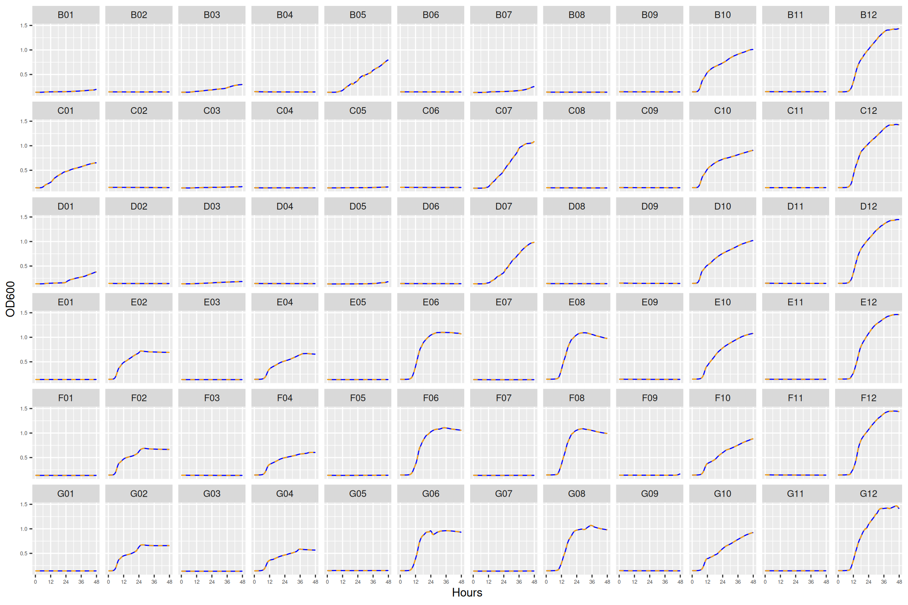
8.2 plate02
Growth curves from bacterial competition at 0 μg/ml streptomycin.
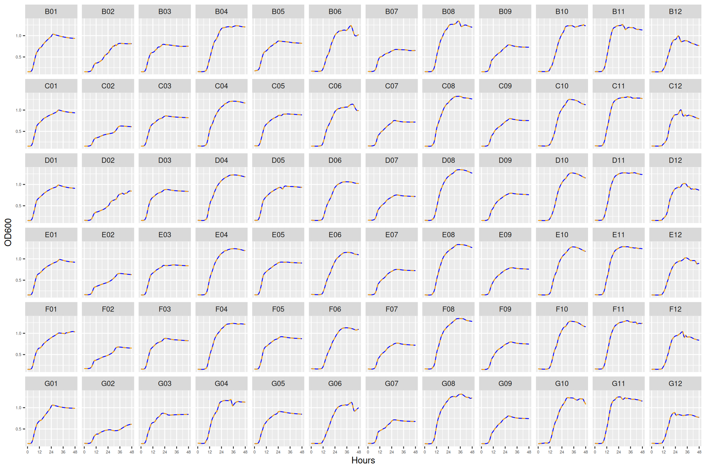
8.3 plate03
Growth curves from bacterial competition at 4 μg/ml streptomycin.
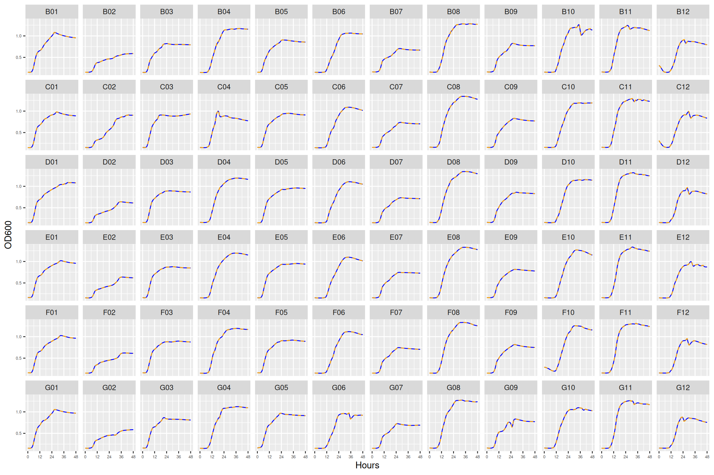
8.4 plate04
Growth curves from bacterial competition at 8 μg/ml streptomycin.
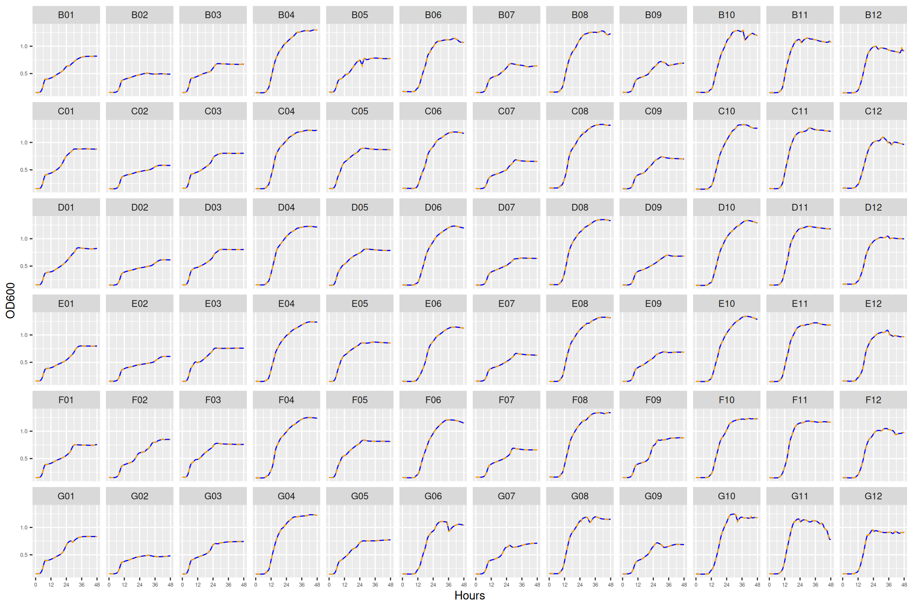
8.5 plate05
Growth curves from bacterial competition at 12 μg/ml streptomycin.
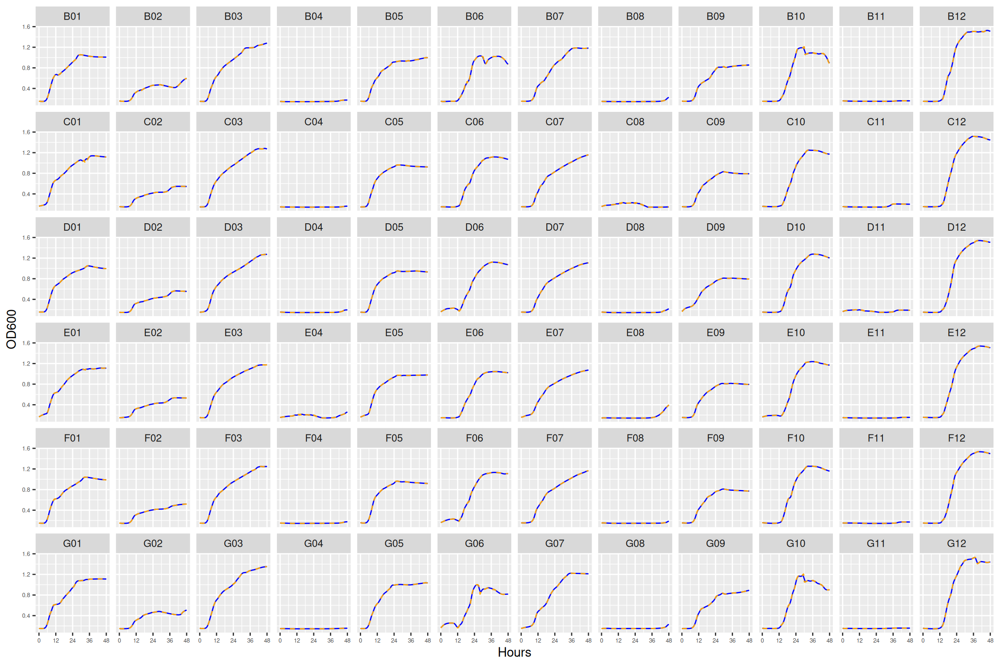
8.6 plate06
Growth curves from bacterial competition at 16 μg/ml streptomycin.
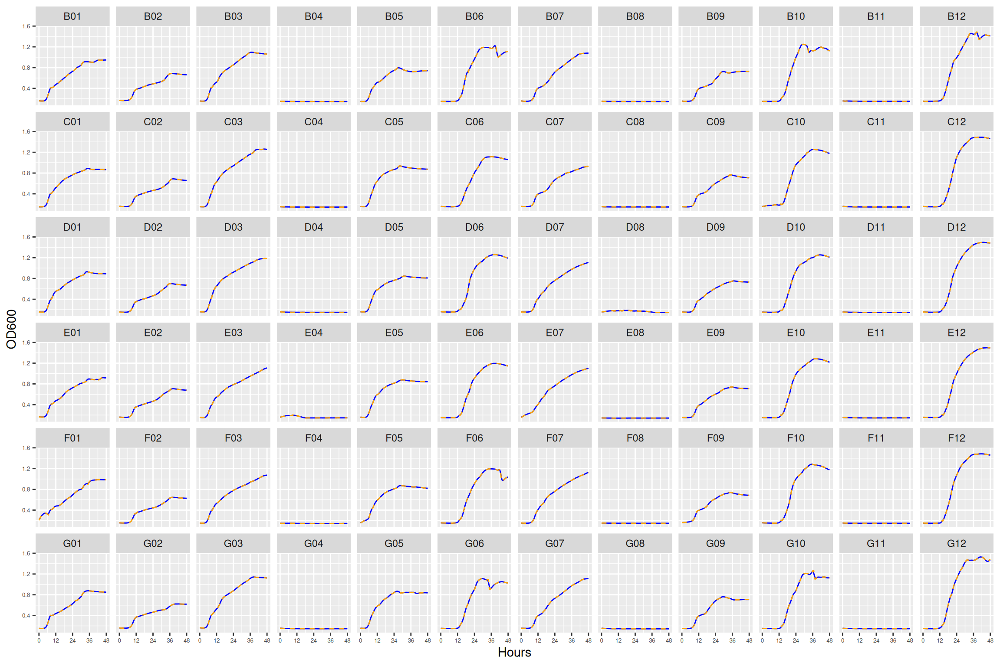
8.7 plate07
Growth curves from bacterial competition at 24 μg/ml streptomycin.
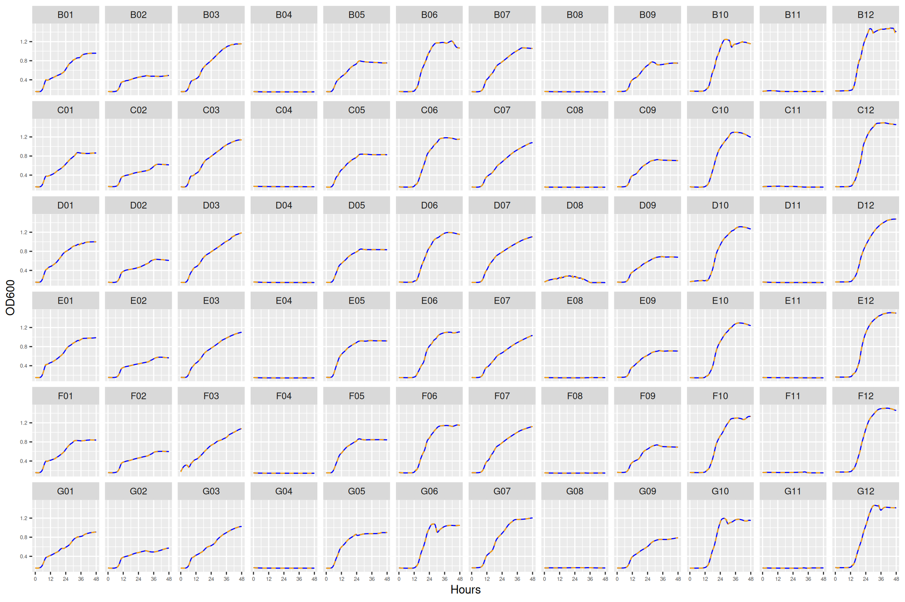
8.8 plate08
Growth curves from bacterial monocultures at 0, 4, 8 μg/ml streptomycin. Here each well pair contains only one bacterial strain.
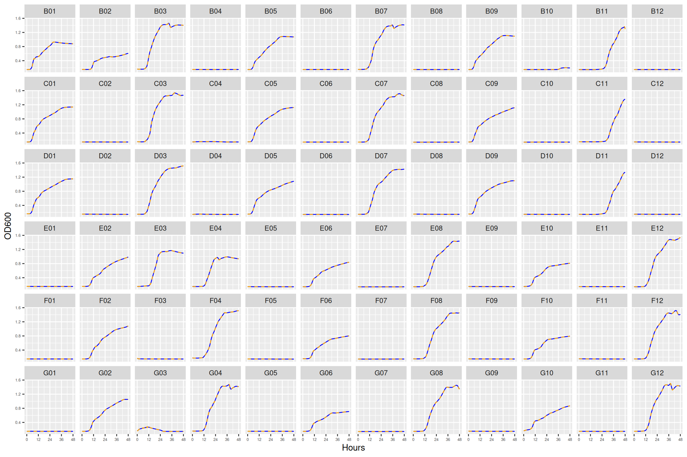
8.9 plate09
Growth curves from bacterial monocultures at 12, 16, 24 μg/ml streptomycin. Here each well pair contains only one bacterial strain.
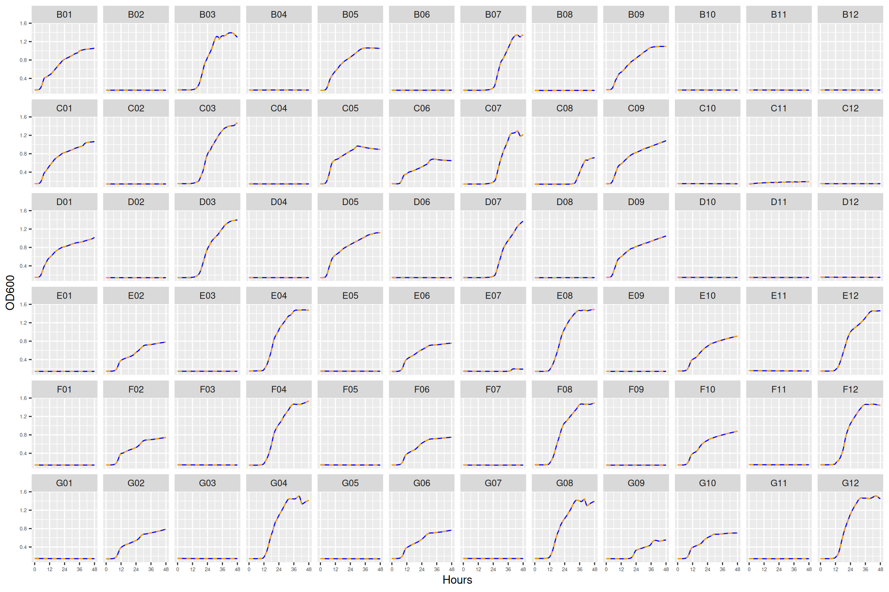
8.10 plate10
Growth curves from bacterial competition co-cultures at 64 and 256 μg/ml streptomycin.
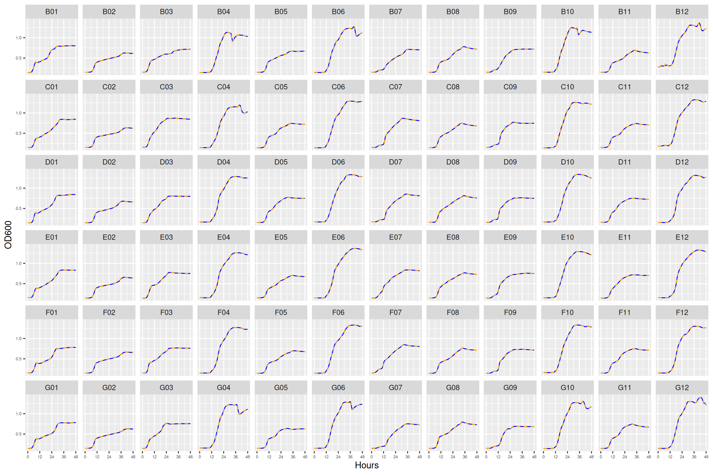
8.11 plate11
- monocultures at 64 and 256 μg/ml streptomycin
- cocultures at 1028 and 4096 μg/ml streptomycin
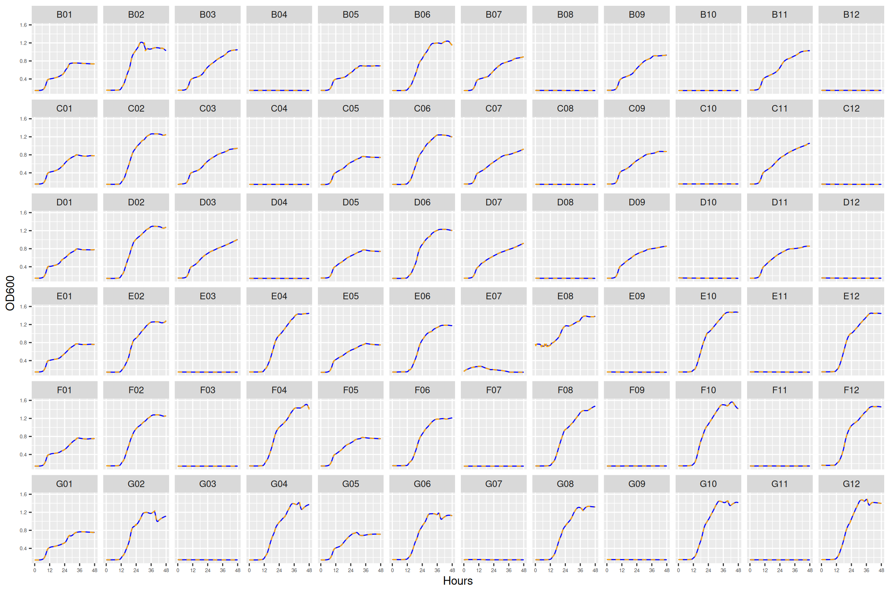
8.12 plate12
- monocultures at 64 and 256 μg/ml streptomycin
- cocultures at 8 and 10 μg/ml streptomycin
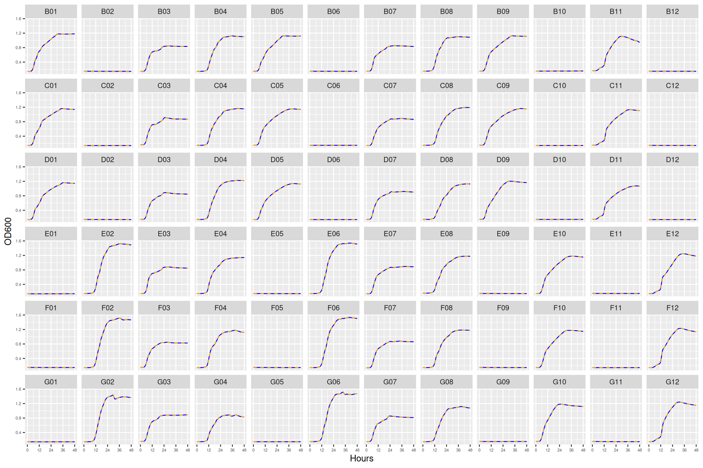